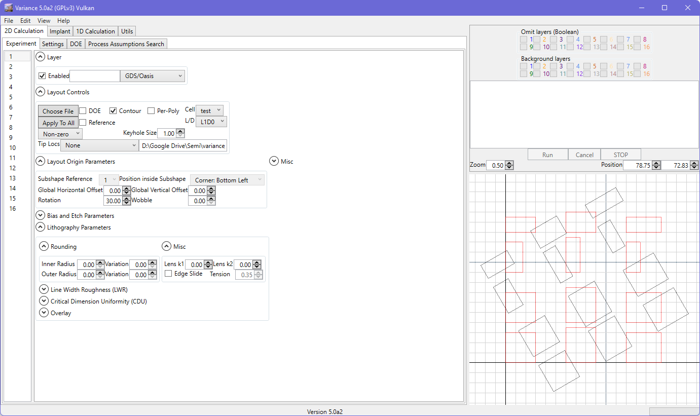
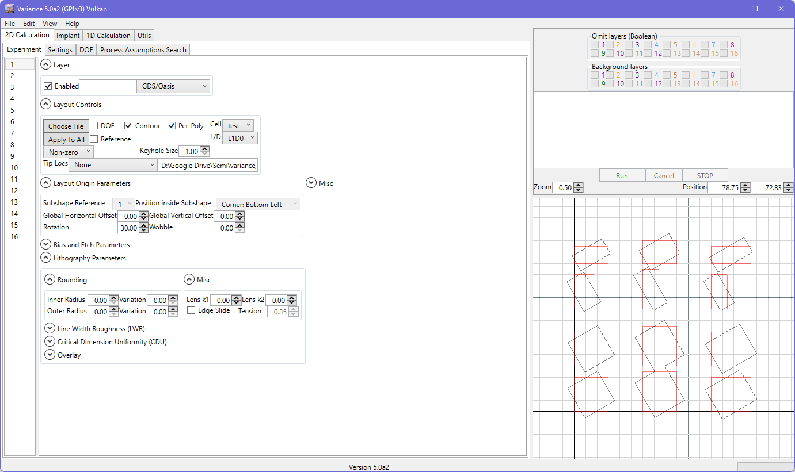

Layout Origin Parameters
For all shape types, the sub-shape reference menu is available. For basic shapes (and GDS or Oasis), only 1 entry is available and so this menu is not useful. For complex shapes that have multiple sub-shapes, you can choose the sub-shape to use. The ‘position inside sub-shape’ menu will then place the chosen region of that sub-shape at the origin of the simulation world.

In addition to this, you can then apply an offset in the horizontal and vertical directions.
Rotation is also supported, and is applied counter-clockwise.
Rotation is also correctly applied in the multi-polygon contour case.
Per-polygon rotation is also available (also applies to wobble). Overlaps from rotation are merged.
